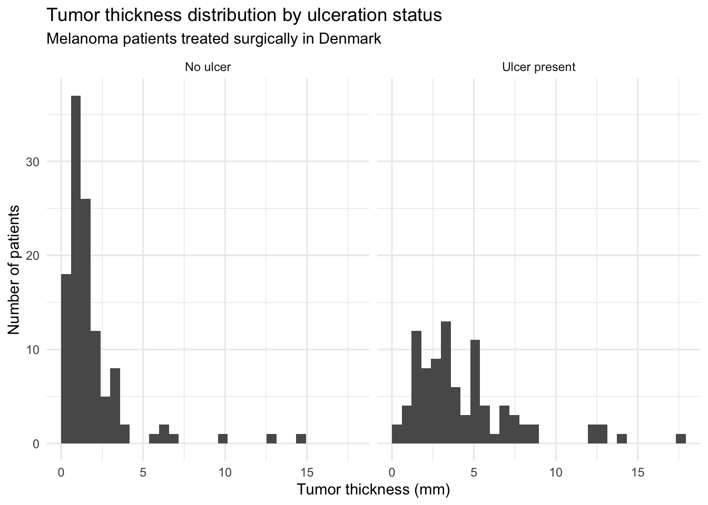
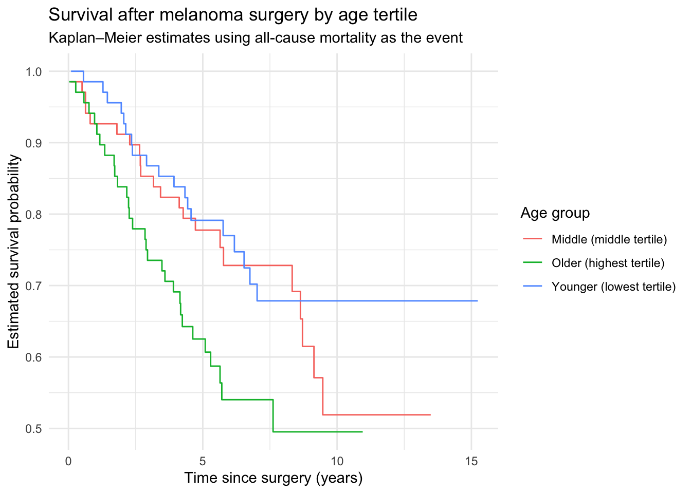

library(MASS)
library(dplyr)
library(tidyr)
library(ggplot2)
library(survival)
library(broom)Example Analysis
Survival after malignant melanoma surgery
Question
The goal of this analysis is to answer the question:
How are survival and mortality after melanoma surgery associated with tumor ulceration, tumor thickness, and patient age?
More specifically, we will:
- Estimate the overall incidence rate of death in the cohort.
- Compare incidence rates and survival curves between patients with vs. without ulceration and with different tumor thickness.
- Explore how age groups (tertiles) relate to survival patterns.
NoteWhy survival analysis?
In melanoma, when a patient dies is as important as whether they die. Time-to-event methods such as the Kaplan–Meier curves and log-rank tests allow us to use information from censored patients (those still alive at last follow-up) rather than discarding them.
Intended Audience
This analysis is intended for:
- Students in biostatistics / epidemiology learning or reviewing survival analysis concepts.
- Healthcare professionals looking for a reproducible example of survival analysis in R.
Data
We use the Melanoma dataset from the MASS package in R, which contains data on 205 patients in Denmark with malignant melanoma who underwent surgery. The original data are described in Statistical Models Based on Counting Processes (Andersen et al. 1993). The R help page for the dataset can be accessed via:
?MASS::Melanomainside R.
Data Dictionary
| Variable | Type | Description |
|---|---|---|
time |
numeric | Time to death or censoring (days) |
status |
integer | 1 = died from melanoma, 2 = alive, 3 = died from other causes |
sex |
integer | 0 = female, 1 = male |
age |
numeric | Age at time of surgery (years) |
year |
integer | Year of operation |
thickness |
numeric | Tumor thickness (mm) |
ulcer |
integer | 0 = no ulceration, 1 = ulceration present |
You can also find this information at ?MASS::Melanoma inside R.
Survival Analysis Key Concepts
Survival analysis refers to statistical methods used to analyze time-to-event data. In other words how long it takes for a specific event (such as death, relapse, or recovery) to occur. Most of the information below are adapted from Sainani (2016).
1. Time
The time variable represents how long each subject was followed in the study. It begins at the time of entry (e.g., surgery or diagnosis) and ends at either:
- the time the event happened, or
- the last time the subject was observed (if the event never happened).
2. Event
The event is the outcome of interest (most commonly death). It is normally a binary variable that records whether or not a subject had the event of interest.
3. Censoring
Subjects who have not yet experienced the event by the end of observation are said to be censored. Censoring means we know the subject was event-free for a certain time, but not what happened afterward. This allows researchers to use partial information from everyone in the study.
Example: A patient followed for 5 years without relapse is censored at 5 years — we know they were relapse-free for 5 years, but not beyond potentially due to loss of followup.
4. Incidence Rate
The incidence rate measures how frequently new events occur over time. \[\begin{equation*} \text{Incidence rate} = \frac{\text{Number of events}}{\text{Total person-time at risk}} \end{equation*}\] It is often expressed per 100 person-years. For example, an incidence rate of 5 deaths per 100 person-years means 5 deaths are expected for every 100 years of follow-up time.
5. Survival Curve
A Kaplan–Meier curve shows the estimated probability of surviving over time. The curve starts at 100% (everyone is event-free initially) and decreases as events occur.
- The y-axis shows survival probability (from 1 to 0).
- The x-axis shows time since entry.
- The curve steps downward as events accumulate.

Tip
The steeper the curve, the higher the event rate; if two curves diverge, it suggests a difference in survival between groups.
Analysis
Setup
Data wrangling
Here we: 1. Load the Melanoma dataset. 2. Convert time from days to years. 3. Collapse original status into a binary event indicator (status_event). 4. Create factor variables for ulceration, sex, and tumor thickness group. 5. Create age tertiles.
Note:
In this analysis we treat all deaths (from melanoma or other causes) as events when defining our outcome.
melanoma_raw <- MASS::Melanoma
melanoma <- melanoma_raw %>%
mutate(
# convert follow-up time to years
time_years = time / 365.25,
# collapse status = 1 or 3 into "death" (1), status = 2 as alive (0)
status_event = if_else(status %in% c(1, 3), 1L, 0L),
# ulcer into factor
ulcer_factor = factor(ulcer,
levels = c(0, 1),
labels = c("No ulcer", "Ulcer present")
),
# sex into factor
sex_factor = factor(sex,
levels = c(0, 1),
labels = c("Female", "Male")
),
# define tumor thickness group
thickness_group = if_else(thickness < 2, "< 2 mm", ">= 2 mm")
) %>%
# drop rows with missing key variables
drop_na(time_years, status_event)
# age tertiles
melanoma <- melanoma %>%
mutate(
age_tertile = ntile(age, 3),
age_group = case_when(
age_tertile == 1 ~ "Younger (lowest tertile)",
age_tertile == 2 ~ "Middle (middle tertile)",
age_tertile == 3 ~ "Older (highest tertile)"
)
)
# distribution of counts
melanoma %>% count(ulcer_factor, thickness_group, age_group) ulcer_factor thickness_group age_group n
1 No ulcer < 2 mm Middle (middle tertile) 27
2 No ulcer < 2 mm Older (highest tertile) 25
3 No ulcer < 2 mm Younger (lowest tertile) 35
4 No ulcer >= 2 mm Middle (middle tertile) 11
5 No ulcer >= 2 mm Older (highest tertile) 10
6 No ulcer >= 2 mm Younger (lowest tertile) 7
7 Ulcer present < 2 mm Middle (middle tertile) 10
8 Ulcer present < 2 mm Older (highest tertile) 5
9 Ulcer present < 2 mm Younger (lowest tertile) 7
10 Ulcer present >= 2 mm Middle (middle tertile) 20
11 Ulcer present >= 2 mm Older (highest tertile) 28
12 Ulcer present >= 2 mm Younger (lowest tertile) 20Overall incidence rate
incidence_overall <- melanoma %>%
summarise(
deaths = sum(status_event),
person_years = sum(time_years),
rate_per_py = deaths / person_years,
rate_per_100py = 100 * rate_per_py
)
incidence_overall deaths person_years rate_per_py rate_per_100py
1 71 1208.279 0.05876125 5.876125The overall incidence rate is approximately 5.9 deaths per 100 person-years.
Incidence rate by ulceration status
Next, we compare incidence rates between those with vs. without ulceration.
incidence_by_ulcer <- melanoma %>%
group_by(ulcer_factor) %>%
summarise(
deaths = sum(status_event),
person_years = sum(time_years),
rate_per_100py = 100 * deaths / person_years,
.groups = "drop"
)
incidence_by_ulcer# A tibble: 2 × 4
ulcer_factor deaths person_years rate_per_100py
<fct> <int> <dbl> <dbl>
1 No ulcer 23 760. 3.02
2 Ulcer present 48 448. 10.7 In this case the group with ulceration has an incidence rate about 3 times higher.
Incidence rate by thickness and ulceration
We first visualize distribution of tumor thickness in with ulceration and no ulceration groups.
ggplot(melanoma, aes(x = thickness)) +
geom_histogram(bins = 30, boundary = 0) +
facet_wrap(~ulcer_factor) +
labs(
title = "Tumor thickness distribution by ulceration status",
subtitle = "Melanoma patients treated surgically in Denmark",
x = "Tumor thickness (mm)",
y = "Number of patients"
) +
theme_minimal()
incidence_by_ulcer_thickness <- melanoma %>%
group_by(thickness_group, ulcer_factor) %>%
summarise(
deaths = sum(status_event),
person_years = sum(time_years),
rate_per_100py = 100 * deaths / person_years,
.groups = "drop"
)
incidence_by_ulcer_thickness# A tibble: 4 × 5
thickness_group ulcer_factor deaths person_years rate_per_100py
<chr> <fct> <int> <dbl> <dbl>
1 < 2 mm No ulcer 14 558. 2.51
2 < 2 mm Ulcer present 6 145. 4.12
3 >= 2 mm No ulcer 9 202. 4.44
4 >= 2 mm Ulcer present 42 302. 13.9 ggplot(
incidence_by_ulcer_thickness,
aes(
x = thickness_group,
y = rate_per_100py,
fill = ulcer_factor
)
) +
geom_col(position = "dodge") +
labs(
title = "Incidence rate of death by tumor thickness and ulceration",
subtitle = "Rates expressed per 100 person-years of follow-up",
x = "Tumor thickness group",
y = "Incidence rate (deaths per 100 person-years)",
fill = "Ulceration"
) +
theme_minimal()
Kaplan–Meier curves by ulceration
fit_ulcer <- survfit(Surv(time_years, status_event) ~ ulcer_factor, data = melanoma)
km_ulcer_df <- broom::tidy(fit_ulcer) %>%
mutate(ulcer_factor = gsub("ulcer_factor=", "", strata))
ggplot(km_ulcer_df, aes(x = time, y = estimate, color = ulcer_factor)) +
geom_step() +
labs(
title = "Survival after melanoma surgery by ulceration status",
subtitle = "Kaplan–Meier estimates using all-cause mortality as the event",
x = "Time since surgery (years)",
y = "Estimated survival probability",
color = "Ulceration"
) +
theme_minimal()
summary(fit_ulcer)$table records n.max n.start events rmean se(rmean)
ulcer_factor=No ulcer 115 115 115 23 12.288255 0.5460706
ulcer_factor=Ulcer present 90 90 90 48 8.063745 0.7028958
median 0.95LCL 0.95UCL
ulcer_factor=No ulcer NA NA NA
ulcer_factor=Ulcer present 6.176591 4.150582 NAsurvdiff(Surv(time_years, status_event) ~ ulcer_factor, data = melanoma)Call:
survdiff(formula = Surv(time_years, status_event) ~ ulcer_factor,
data = melanoma)
N Observed Expected (O-E)^2/E (O-E)^2/V
ulcer_factor=No ulcer 115 23 44.5 10.4 27.9
ulcer_factor=Ulcer present 90 48 26.5 17.3 27.9
Chisq= 27.9 on 1 degrees of freedom, p= 1e-07 The median survival time for the ulcerated group was about 6.2 years. The log-rank test comparing two curves was highly significant (\(p = 1 \times 10^{-7}\)), indicating strong evidence of worse survival among those with ulceration.
Kaplan–Meier curves by tumor thickness and ulceration
Next we add in tumor thickness and inspect the survival curves.
fit_thick_ulcer <- survfit(
Surv(time_years, status_event) ~ thickness_group + ulcer_factor,
data = melanoma
)
km_thick_ulcer_df <- broom::tidy(fit_thick_ulcer) %>%
mutate(
group = gsub("thickness_group=", "", strata),
group = gsub("ulcer_factor=", "", group)
)
ggplot(km_thick_ulcer_df, aes(x = time, y = estimate, color = group)) +
geom_step() +
labs(
title = "Survival after melanoma surgery by thickness and ulceration",
subtitle = "Kaplan–Meier estimates using all-cause mortality as the event",
x = "Time since surgery (years)",
y = "Estimated survival probability",
color = "Group"
) +
theme_minimal()
survdiff(Surv(time_years, status_event) ~ thickness_group + ulcer_factor, data = melanoma)Call:
survdiff(formula = Surv(time_years, status_event) ~ thickness_group +
ulcer_factor, data = melanoma)
N Observed Expected
thickness_group=< 2 mm, ulcer_factor=No ulcer 87 14 33.24
thickness_group=< 2 mm, ulcer_factor=Ulcer present 22 6 8.49
thickness_group=>= 2 mm, ulcer_factor=No ulcer 28 9 11.22
thickness_group=>= 2 mm, ulcer_factor=Ulcer present 68 42 18.06
(O-E)^2/E (O-E)^2/V
thickness_group=< 2 mm, ulcer_factor=No ulcer 11.138 21.022
thickness_group=< 2 mm, ulcer_factor=Ulcer present 0.728 0.828
thickness_group=>= 2 mm, ulcer_factor=No ulcer 0.438 0.523
thickness_group=>= 2 mm, ulcer_factor=Ulcer present 31.745 42.996
Chisq= 44.4 on 3 degrees of freedom, p= 1e-09 Again we observed a highly significant log-rank test p-value (\(1 \times 10^{-9}\)), indicating there is significant difference in survival among 4 groups.
Survival by age tertiles
Lasly we investigate whether different age groups have different survival outcomes after melanoma surgery.
fit_age <- survfit(Surv(time_years, status_event) ~ age_group,
data = melanoma
)
km_age_df <- broom::tidy(fit_age) %>%
mutate(age_group = gsub("age_group=", "", strata))
ggplot(km_age_df, aes(x = time, y = estimate, color = age_group)) +
geom_step() +
labs(
title = "Survival after melanoma surgery by age tertile",
subtitle = "Kaplan–Meier estimates using all-cause mortality as the event",
x = "Time since surgery (years)",
y = "Estimated survival probability",
color = "Age group"
) +
theme_minimal()
summary(fit_age)$table records n.max n.start events rmean
age_group=Middle (middle tertile) 68 68 68 22 10.569057
age_group=Older (highest tertile) 68 68 68 30 9.226518
age_group=Younger (lowest tertile) 69 69 69 19 11.634685
se(rmean) median 0.95LCL 0.95UCL
age_group=Middle (middle tertile) 0.7875148 NA 8.711841 NA
age_group=Older (highest tertile) 0.8232380 7.616701 5.092402 NA
age_group=Younger (lowest tertile) 0.6965044 NA NA NAsurvdiff(Surv(time_years, status_event) ~ age_group, data = melanoma)Call:
survdiff(formula = Surv(time_years, status_event) ~ age_group,
data = melanoma)
N Observed Expected (O-E)^2/E (O-E)^2/V
age_group=Middle (middle tertile) 68 22 24.5 0.259 0.396
age_group=Older (highest tertile) 68 30 20.0 4.948 7.004
age_group=Younger (lowest tertile) 69 19 26.4 2.093 3.365
Chisq= 7.4 on 2 degrees of freedom, p= 0.02 The log-rank test for age tertile is also significant (\(p = 0.02\)), showing that there is a significant difference in survival distributions among 3 different age groups.
Summary of Results
In this analysis of 205 melanoma patients who underwent surgery, we estimated an overall incidence rate of death of about 5.9 deaths per 100 person-years. Patients with ulcerated tumors had a substantially higher incidence rate and worse Kaplan–Meier survival curves than those without ulceration; the incidence rate ratio was about 3.5, and the log-rank test comparing survival curves was highly significant (\(p=1 \times 10^{-7}\)). When inspecting tumor thickness and ulceration together, patients with ulceration and a higher tumor thickness showed significantly worse survival as well. Older age tertiles seem to be associated with worse survival, which is consistent with known prognostic factors in many healthcare problems as older patients tend to be more vulnerable to malignant diseases as well as complications after surgery. Altogether the analysis demonstrated potential risk factors for worse survival after melanoma surgery.
Functions used
Below is a list of the core functions used from selected packages:
dplyr
mutate()group_by()
summarise()count()ntile()case_when()
tidyr
drop_na()
ggplot2
ggplot()geom_histogram()geom_step()
geom_col()facet_wrap()
theme_minimal()
References
Andersen, Per K., Ørnulf Borgan, Richard D. Gill, and Niels Keiding. 1993. Statistical Models Based on Counting Processes. New York: Springer.
Lockwood, Gwilym. 2020. “Survival Analysis in Alteryx and Tableau.” 2020. https://www.theinformationlab.co.uk/community/blog/survival-analysis-in-alteryx-and-tableau/.
Sainani, Kristin L. 2016. “Introduction to Survival Analysis.” PM&R 8 (6): 580–85. https://doi.org/https://doi.org/10.1016/j.pmrj.2016.04.003.